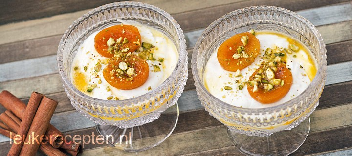

Abrikozen met pistache dessert
Yoghurt met zoete warme abrikoosjes bestrooid met pistachenootjes
Ingrediënten
- 50 gr suiker
- 1 kaneelstokje (of 1 theelepel kaneelpoeder)
- 400 gr Griekse yoghurt
- 40 gr pistachenootjes, ongezouten
- 1 eetlepel honing
- 1 theelepel kaneel
- Paar saffraandraadjes
- 4 of meer kleine abrikoosjes op sap
Bereidingswijze
- Hak de pistachenootjes fijn en halveer de abrikoosjes.
- Verhit 250 ml water, suiker, honing, saffraan en kaneel in een pannetje en voeg de abrikoosjes toe.
- Laat de vruchten ongeveer 15 minuten in het pannetje op zacht vuur staan.
- Roer 1 theelepel kaneelpoeder door de yoghurt en verdeel over 4 glazen.
- Serveer de abrikoosjes op de yoghurt en schenk er wat warm sap uit het pannetje over.
- Strooi er als laatste wat pistachenootjes over.

🡄 Vorige Homepage 🏠